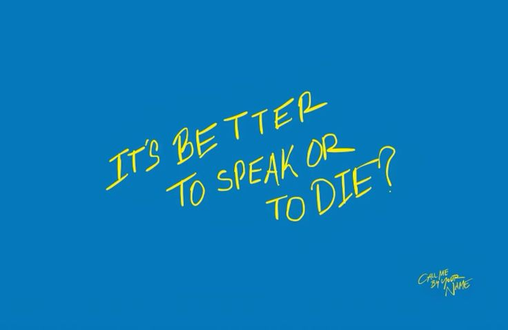

Have you ever swallowed your words because you were afraid of how others would react? Speaking the truth feels overwhelming and frightening. We are constantly living under the control of fear. Fear of rejection, conflict, criticism or even losing someone we care about which leaves us no choice but to stay silent. The thought of what might happen after we speak feels more like a burden than keeping things to ourselves.

Some feelings are better left unsaid. Silence starts to feel safer than confessing. We convince ourselves time will pass and things will be better somehow. But time passing doesn’t take away your feelings. Moving on with your life with unresolved feelings will only make you crave closure. We protect ourselves from rejection but also prevent ourselves from hearing the truth.
We often trap ourselves between what we feel and what we say. Things are left unsaid, feelings dismissed. The more we carry on with our day with the words caged in a vault inside our heart the heavier our feelings will get. Speaking doesn’t guarantee that we will get the answer we need. But it will give us the satisfaction that we were brave and honest enough to confess something even though it didn’t work out.
In the end, speaking is not the hard part, it's the consequences that follows. So, when the time comes ask yourself, "Is it better to speak or to die?".